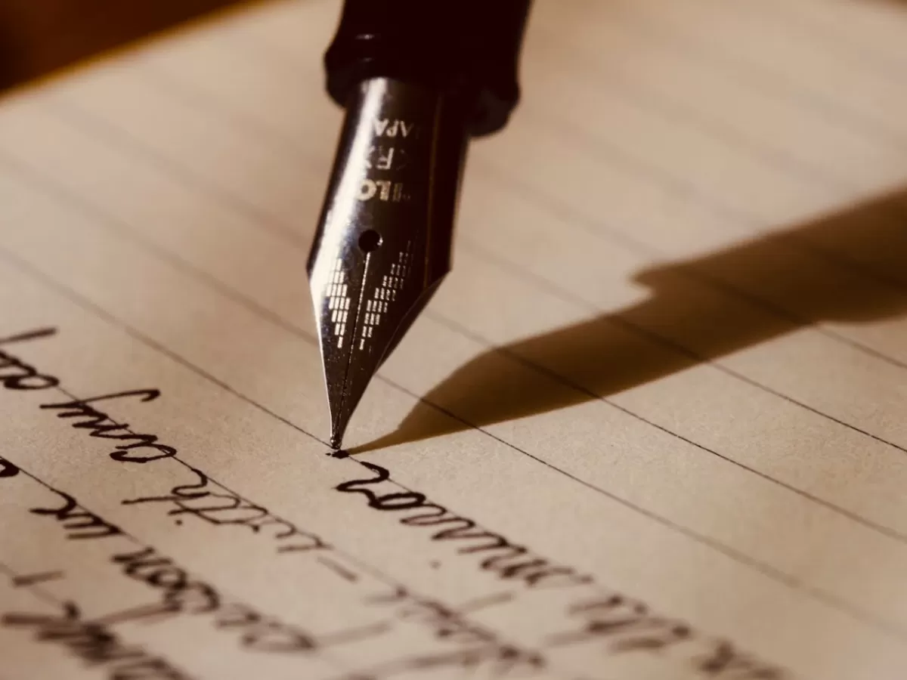
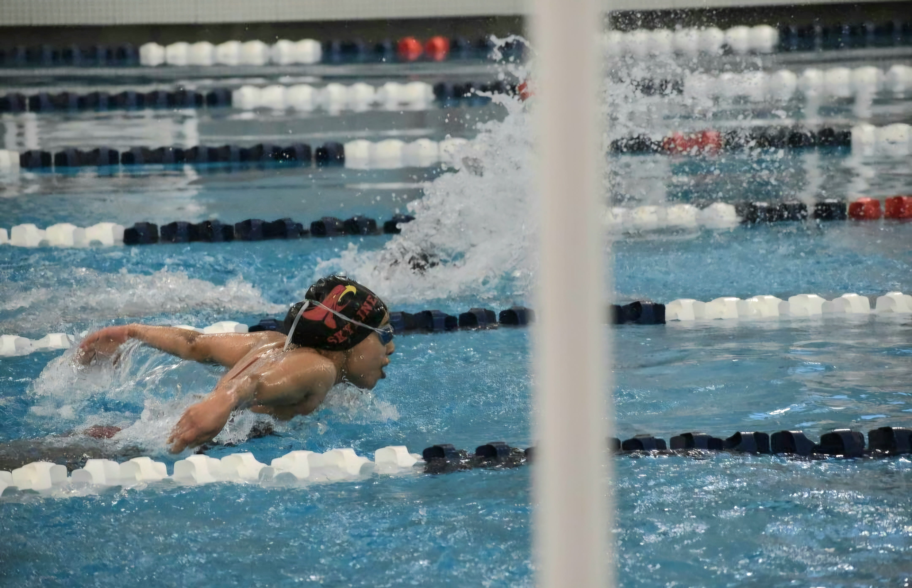
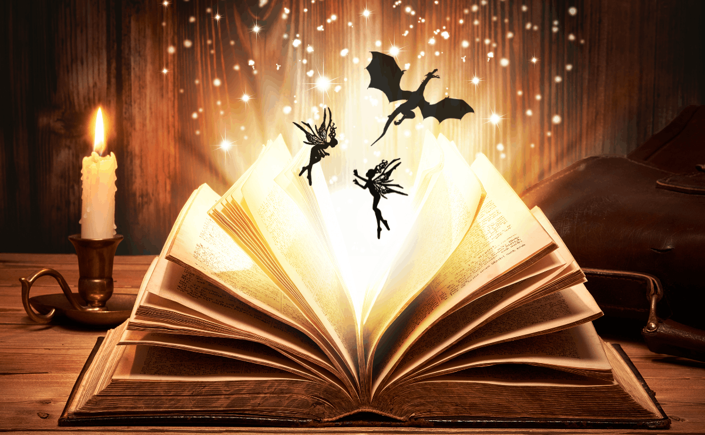

My Hobbies
In my free time, I enjoy creative writing, swimming, and reading. These hobbies allow me to express my creativity, stay active, and stay engaged.
My Favorite Hobbies
Creative Writing

I enjoy creative writing because it allows me to express my emotions and thoughts in an imaginative way. I like to write novels because they require more attention and I can create an immersive world with it. So far, I have completely finished one novel, am editing another, and am currently writing three others, with many more ideas written down. I mostly write fantasy/sci-fi novels, but the ideas I have for other novels explore other genres, such as murder mysteries and paranormal fiction.
Swimming

I enjoy swimming because it's a great way to stay active. I had been competitively swimming for more than 10 years, so now I still swim for fun. It's been a great way to de-stress and maintain my skills that I've developed over the years. My favorite events are the 200 IM and the 100 fly, even though I don't exactly like butterfly, but I'm good at it.
Reading

I enjoy reading because there are so many ways something can be written. My favorite genre is fantasy because I can escape and be immersed into a different world. A lot of the books I read are also inspiration for my own writing. My favorite books are the School for Good and Evil series by Soman Chainani, the Throne of Glass series by Sarah J. Maas, and the Curse of Saints trilogy by Kate Dramis.